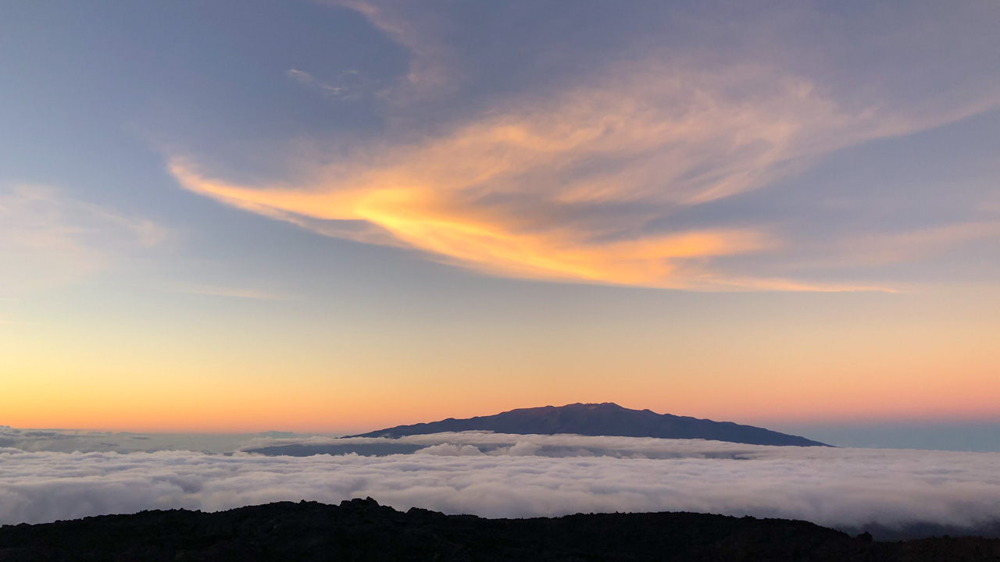

I got out for a night of observing on Saturday. I had to wedge it in between two runs of night support for my "day" job, so it was my only chance this month to get out for some observing.
There was quite a bit of cirrus at sunset, but it made for some dramatic color in the clouds as can be seen in the banner photo above and in this image (taken a few minutes earlier) of Maunakea with a wisp of cirrus catching the sun.

Maunakea at sunset.
I ended up at the Wind Sock area off the Mauna Loa access road. I did not set up immediately due to the cirrus, but the thickest parts did move off eventually. There was still a thin covering, so it was not a night for hunting faint deep sky objects. Fortunately, the seeing was good and there were planets available, so I spent all my time on those.
I was actually quite limited in what I could observe thanks to a mistake I made when packing the car. I've recently been using my new AZ-100 alt-az mount, but since I knew that I wanted to look at planets tonight (especially Mars), I'd packed my trusty Losmandy G-11, so I'd have tracking. Unfortunately, I'd grabbed a single 11 lb. counter wight, but my SVX152 refractor requires a 21 lb. counter weight (or two 11 lb. weights). With insufficient counter weights, I'd be in danger of my scope flipping over and crashing in to the tripod! I poked around in the car for a solution and eventually discovered that a Nalgene bottle full of water can hang semi-securely off the end of the counterweight shaft. This was still a bit light, but with the clutches tightened the scope would stay where it was pointed. Slewing from target to target was difficult. It required one hand to move the scope, one hand to hold the Nalgene bottle so it wouldn't fall off, and was quite awkward. Thanks to this, I observed only three objects this night: Jupiter, Saturn, and Mars.
Only looking at three objects was not a problem however because the seeing was excellent. Jupiter and Saturn were gorgeous, but I was really out tonight to look at Mars which is nearing closest approach to Earth on Oct 6 (opposition is on Oct 13). As Mars rose, I could see the polar ice cap as a very small white dot surrounded by a broader white haze. While I absolutely love looking at Mars, I'm embarrassed to say that I don't know the names of the features very well at all. With good viewing opportunities only coming every 2+ years, I never commit them to memory.
In addition to the polar cap and haze, there was a limb haze on one side of the planet and a bit of pale haze surrounding the other polar ice cap (which was tilted away from Earth and thus not visible). There were a trio of beautiful dark markings, almost comet-like parallel streaks on the planet. Looking at the Mars map in Sky Safari, I think these were Terra Cimmeria, Tyrrhena Terra, and Promethei Terra, but there's a confusion of detail and labels in that map, so I may be getting those wrong.
The seeing was excellent as I mentioned. There was little or no bulk image motion, but as you watched additional fine details would occasionally snap in to view. It felt almost like a contrast effect rather than a sharpness effect, but each of these dark areas would occasionally grow very detailed around the edges and the shapes would take on an incredible richness of detail. I spent quite a bit of time using the 2.5mm setting on my 2-4mm Nagler Zoom eyepiece (which is 480 magnification). I'd originally thought I'd probably sell this eyepiece when I got the 152 because the magnifications would be too high, but it has turned out useful to have that range and the ability to tune the magnification to the seeing conditions.
In the end, despite cirrus and only partially functional equipment, it was a very satisfying night.